Gate and site, designed and built · Al Ain City Municipality · Innovation Month · Al Ain · 2024 · through AntBrush
Nine weeks out, the forecourt was empty.
Al Ain City Municipality wanted its Innovation Month outside, in front of its own building, for two days in February. In December I stood on the paving and started from nothing.
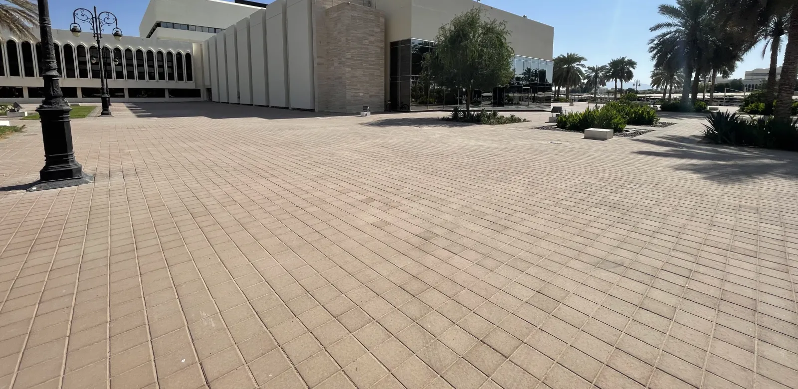
Discover
The idea was in the mark.
The month's mark is a map of the UAE made of squares. The mark is the national campaign's. I took its square.
Discover
Give a square depth.
And it is a box.
Assemble
Stack the boxes into a gate.
Twelve metres wide, four metres high: the way in.
3D presentation built from the January 2024 designExtend
The design, January 2024.
Drawn to the forecourt, with its measures.
Extend
Then a frame and a roof.
The final design, sent on 2 February.
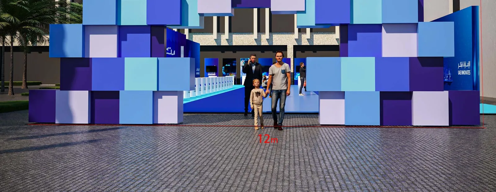
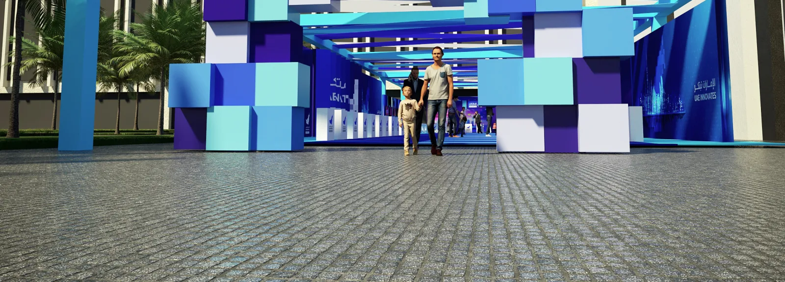
Discover
The idea was in the mark.
The month's mark is a map of the UAE made of squares. The mark is the national campaign's. I took its square, gave it depth, and stacked the boxes into a gate twelve metres wide.
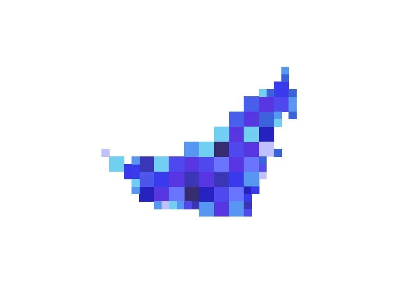
The design, January 2024.
Drawn to the forecourt, with its measures. By 2 February it had a frame and a roof.
Extend
Lift the roof and there is a street.
Fabric shade above. Under it, stands for the municipality's projects, a children's corner and a robotics showcase.
Extend
From the forecourt.
Flags on either side, the gate in the middle, the street behind it.
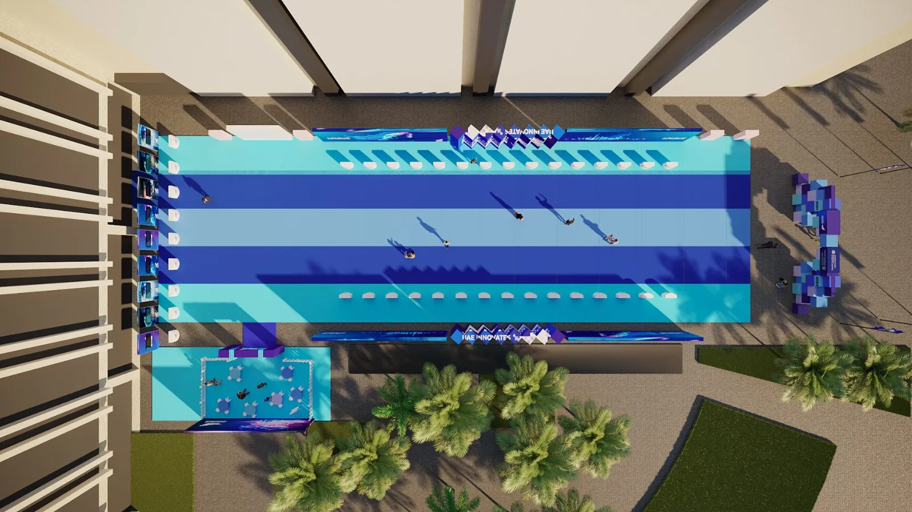
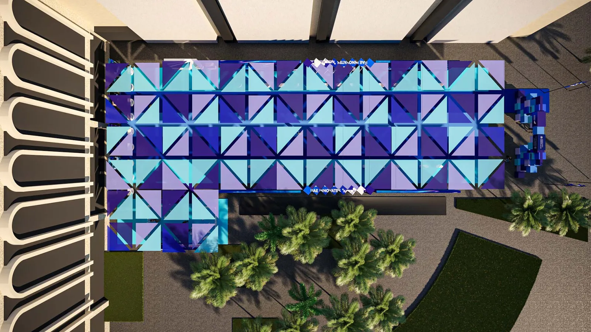
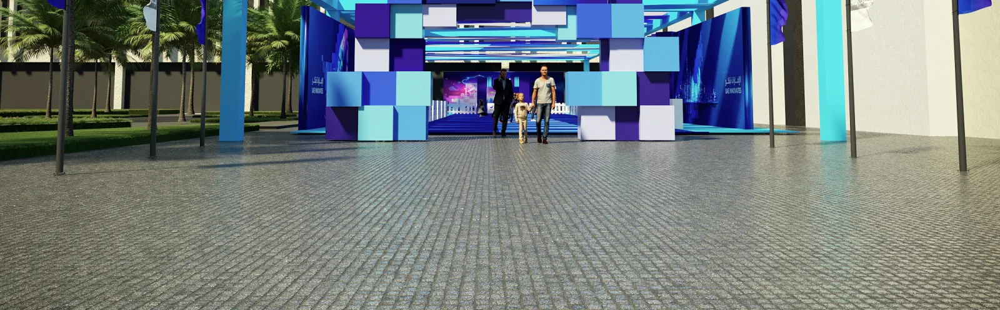
Lift the roof and there is a street.
Fabric shade above. Under it, stands for the municipality's projects, a children's corner and a robotics showcase.
Prove · the same forecourt
December: nothing.
Paving, palms, the building.
Prove · 18 February 2024
Three nights before: steel.
The frames for the boxes laid out on the paving, the roof posts going up.
Prove · 21 February 2024
The morning it opened.
Three days after the steel, the gate stood where the grid had been.
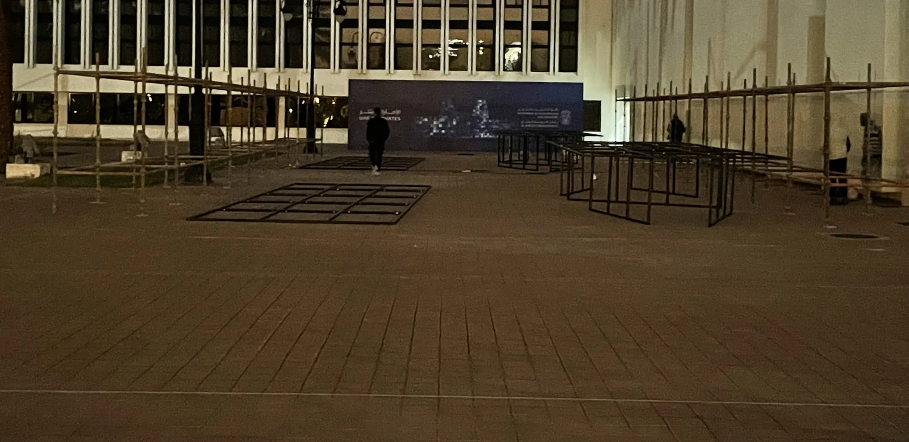
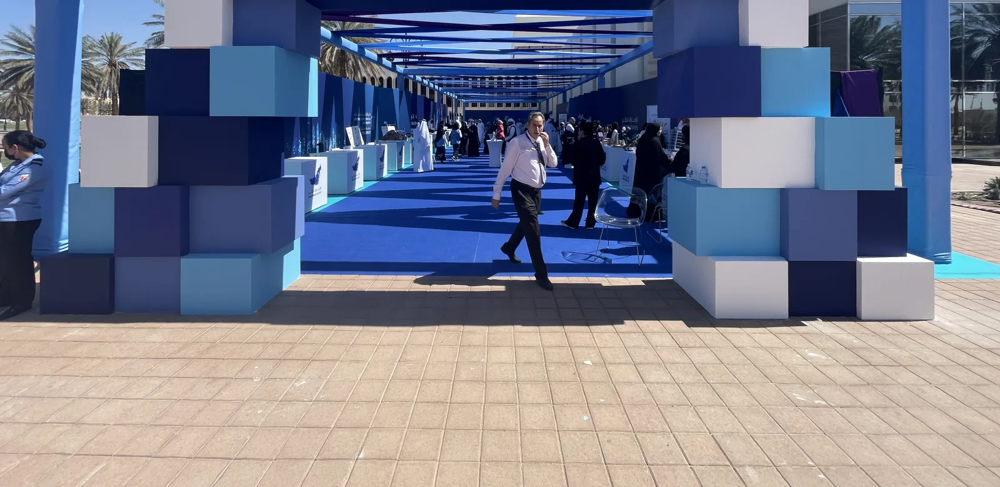
Prove · the same forecourt
December: nothing. Then steel. Then the gate.
Three days after the steel, the gate stood where the grid had been.
I was there for all of it.
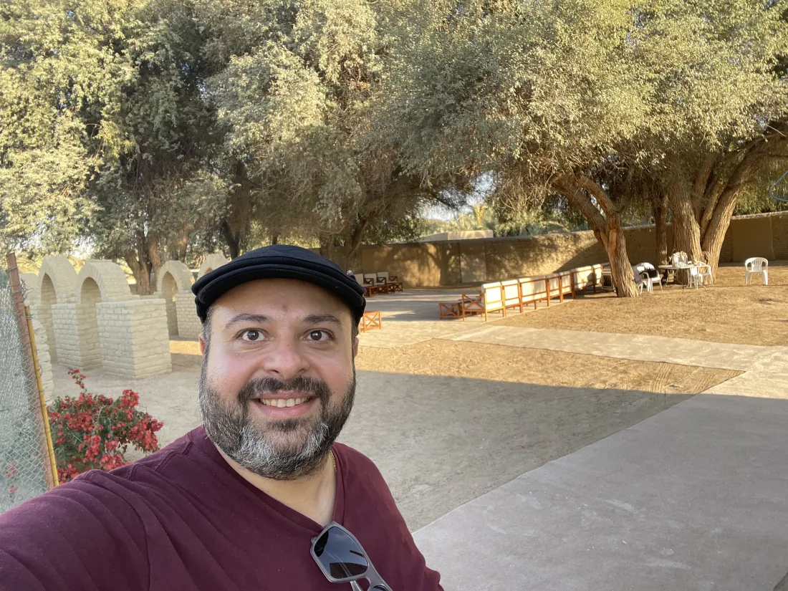
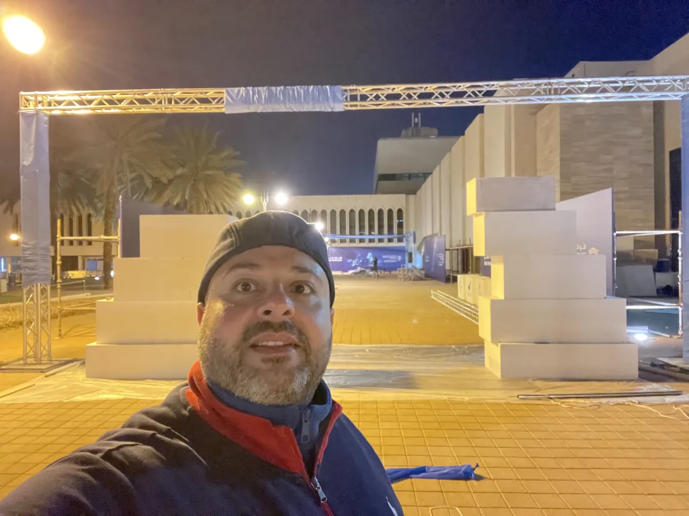
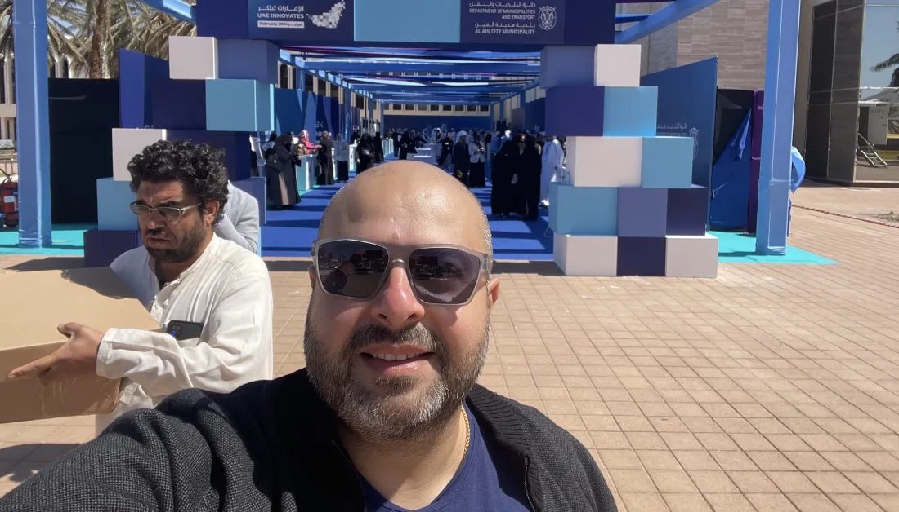
The year before · staff town halls · Department of Municipalities and Transport · 2023 · through AntBrush
The same client, three auditoriums.
In May and June 2023 I designed and produced the department's staff town halls in Abu Dhabi, Al Ain and Al Dhafra: the entrances, the stage screens, the printed pieces and the filming. We built it three times in six weeks.
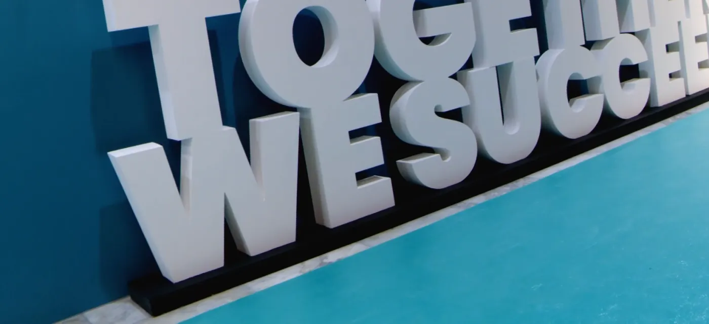
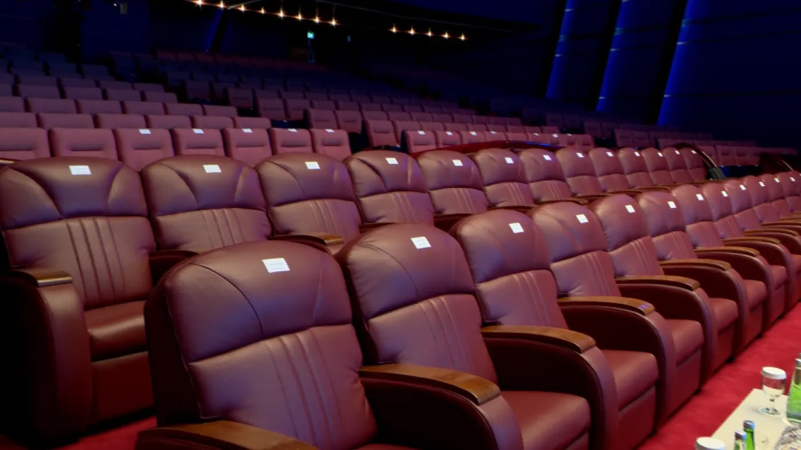
The record
Drawn in January. Open on 21 February.
- My roleExecutive Creative Director: the idea, the design and the build, through AntBrush, my studio.
- ClientAl Ain City Municipalitypart of the Department of Municipalities and Transport
- PlaceThe forecourt of the municipality's main building, Al Ain
- Dates21 and 22 February 2024
- We madeThe entrance gate, the fabric roof, the stands, the children's corner, the flags.
- Built withHalwan Advertising and Production